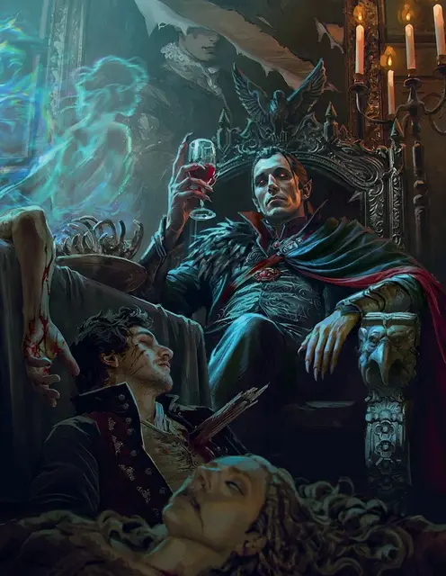

Страд, хозяин Дома Смерти
Strahd Von Zarovich
Средняя Нежить (Вампир, Волшебник), законно-злая, именной НИП

Класс Доспеха 16 (природный доспех)
Хиты 136 (16к8 + 64)
Скорость 30 футов
| мод | спас | ||
|---|---|---|---|
| СИЛ | 18 | +4 | +4 |
| ЛОВ | 18 | +4 | +9 |
| ТЕЛ | 18 | +4 | +4 |
| мод | спас | ||
|---|---|---|---|
| ИНТ | 20 | +5 | +5 |
| МДР | 15 | +2 | +7 |
| ХАР | 18 | +4 | +9 |
Навыки Восприятие +12, Магия +15, Религия +10, Скрытность +14
Сопротивление урону некротическая энергия; дробящий, колющий, рубящий от немагических атак
Чувства тёмное зрение 120 футов, пассивное Восприятие 22
Языки Общий, Бездны, Великаний, Драконий, Инфернальный, Эльфийский
Опасность 15 (13000 опыта)
Бонус мастерства +5
Особенности
Легендарное сопротивление (3/день). Если Страд проваливает спасбросок, он может вместо этого сделать спасбросок успешным.
Хозяин Дома. Когда хиты Страда опускаются до 0, он растворяется туманом и мгновенно телепортируется в своё логово в Замке Равенлофт. Спустя 1к4 часа Страд появляется вновь в случайном незанятом пространстве своего логова, восстановив все хиты.
Регенерация. Страд восстанавливает 20 хитов в начале своего хода, если у него есть хотя бы 1 хит. Если вампир получает урон излучением, эта особенность не действует в начале его следующего хода.
Паучье лазание. Страд может лазать по сложным поверхностям, включая потолки, без совершения проверок характеристик.
Слабости вампира. Страд обладает следующими слабостями:
Урон от текущей воды. Страд получает урон кислотой 20, если оканчивает ход в текущей воде, и он не может использовать Изменение формы.
Гиперчувствительность к солнечному свету. Страд получает урон излучением 20, если начинает ход под солнечным светом. Находясь на солнечном свету, он совершает с помехой броски атаки и проверки характеристик, и он не может использовать Изменение формы.
Действия
Мультиатака. Страд совершает две атаки Ударом смерти. Он может заменить одну из этих атак использованием Проклятого огня, если возможно.
Удар смерти. Рукопашная атака оружием: +9 к попаданию, досягаемость 5 футов, одна цель. Попадание: 8 (1к8 + 4) рубящего урона плюс 14 (4к6) урона некротической энергией. Если цель — существо, то вместо причинения рубящего урона Страд может схватить цель (Сл высвобождения 18). Страд может держать в захвате только одно существо одновременно.
Проклятый огонь (перезарядка 5-6). Страд создаёт теневой, некротический огонь, который заполняет сферу радиусом в 20 футов с центром в точке пространства, которую он может видеть в пределах 90 футов от себя. Все существа в этой области должны совершить спасбросок Ловкости Сл 18, получая 14 (4к6) урона огнём плюс 14 (4к6) урона некротической энергией при провале или только половину этого урона при успехе.
Очарование. Страд нацеливается на одного гуманоида, которого видит в пределах 30 футов. Цель должна преуспеть в спасброске Мудрости Сл 17, иначе станет очарованной. Очарованная цель считает Страда верным другом, о котором нужно заботиться, и которого нужно защищать. Несмотря на то, что цель не находится под контролем Страда, она выполняет его просьбы и искренне прилагает все нужные для этого усилия. Каждый раз, когда Страд или его спутники делают цели что-нибудь плохое, цель может повторить спасбросок, оканчивая эффект на себе при успехе. В противном случае эффект длится 24 часа, пока хиты Страда не будут снижены до 0, пока он с целью не окажутся на разных планах существования, или пока он не окончит эффект бонусным действием.
Использование заклинаний. Страд накладывает одно из следующих заклинаний, используя Интеллект в качестве базовой характеристики (Сл спасброска от заклинаний 18):
• Неограниченно: обнаружение мыслей [detect thoughts], туманное облако [fog cloud], волшебная рука [mage hand]
• 2/день каждое: восставший труп [animate dead] (действием), порыв ветра [gust of wind], отражения [mirror image], необнаружимость [nondetection]
• 1/день каждое: высшая невидимость [greater invisibility], превращение [polymorph], наблюдение [scrying] (действием)
Бонусные действия
Укус. Рукопашная атака оружием: +9 к попаданию, досягаемость 5 футов, одно существо, которое схвачено или очаровано. Попадание: 7 (1к6 + 4) колющего урона плюс 10 (3к6) урона некротической энергией. Максимум хитов цели уменьшается на количество, равное полученному урону некротической энергией, а Страд восстанавливает такое же количество хитов. Уменьшение хитов длится до тех пор, пока цель не окончит продолжительный отдых. Цель умирает, если этот эффект уменьшает максимум её хитов до 0. Гуманоид, убитый этим способом, а после закопанный в землю, восстает следующей ночью в качестве порождение вампира [vampire spawn], находящегося под контролем Страда.
Изменение формы. Страд превращается в новый облик или возвращается в свой истинный облик. Все носимое им снаряжение трансформируется вместе с ним, но несомое снаряжение не меняется. Он возвращается в свой истинный облик в случае смерти. Во время превращения Страд может выбрать один из следующих обликов:
Облик зверя. Страд превращается в Крошечную летучую мышь [bat] (скорость полёта 30 футов), либо в Среднего волка [wolf] (скорость 40 футов). Находясь в этом облике, он не может говорить, а вся его статистика за исключением размера и скорости остается той же самой.
Туманный облик. Страд превращается в облако тумана Среднего размера. Находясь в этом облике, Страд обладает скоростью полета 20 футов, может парить и входить в пространство враждебных существ и останавливаться там. Страд может проходить сквозь любое пространство, не протискиваясь, до тех пор, пока сквозь это же пространство может пройти воздух, однако он не может проходить сквозь жидкости. Страд совершает с преимуществом спасброски Силы, Ловкости и Телосложения, получает иммунитет ко всему немагическому урону, за исключением того урона, который он получает как часть своей особенности Слабости вампира. Находясь в туманном облике, Страд не может совершать действия, говорить или использовать объекты.
Легендарные действия
Страд может совершить 3 легендарных действия, выбирая из представленных ниже вариантов. За один раз можно использовать только одно легендарное действие, и только в конце хода другого существа. Страд восстанавливает использованные легендарные действия в начале своего хода.
Хитрый побег. Страд перемещается на расстояние, не превышающее его скорость, не провоцируя атаки.
Удар (стоит 2 действия). Страд совершает одну атаку Ударом смерти.
Описание
Страд фон Зарович — темный лорд Баровии, одного из доменов Ужаса. В нем мало что происходит без его ведома, хотя сам темный лорд редко обращает внимание на то, что считает скучными делами низших существ. Когда герои прибывают в Баровию и исследуют место под названием Дом Смерти в поисках осколка жезла семи частей, интерес Страда возрастает, поэтому он появляется. Персонажи встречают его в качестве хозяина Дома Смерти в главе 5.
История
При жизни Страд фон Зарович был принцем, воином и завоевателем. Жажду мужчины ко власти невозможно было утолить, поэтому он заключил договор с Темными Силами и стал бессмертным. Зло все сильнее пускало корни в сердце Страда, пока в порыве ревности он не убил своего брата Сергея. Супруга Сергея по имени Татьяна прыгнула с башни, спасаясь от Страда, и исчезла в тумане, поднимающемся вокруг Баровии, в то время как сам Страд убивал всех остальных в замке. Он превратился в вампира, а Баровия стала Доменом Ужаса.
Теперь Темные Силы держат Страда в ловушке своего царства, вечно мучая невозможностью сбежать. Он проводит свои дни, развлекаясь, как может, терроризируя жителей Баровии и упиваясь страхом и уважением к его авторитету.